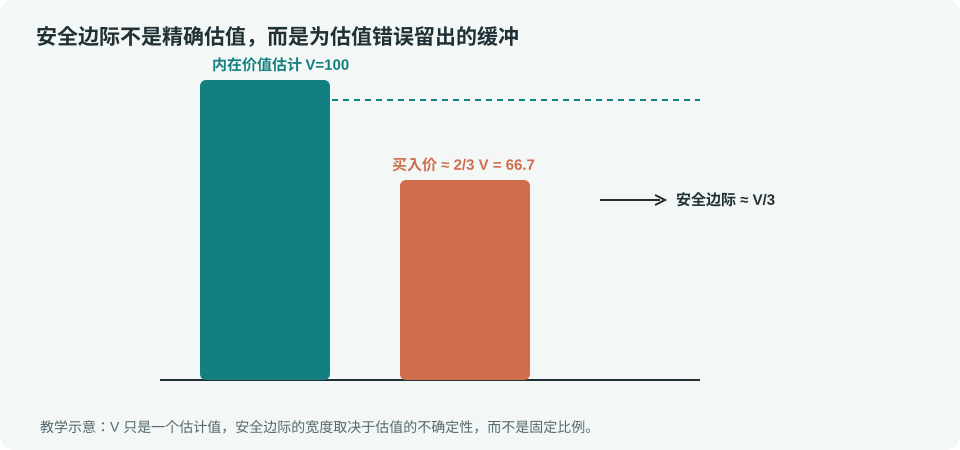
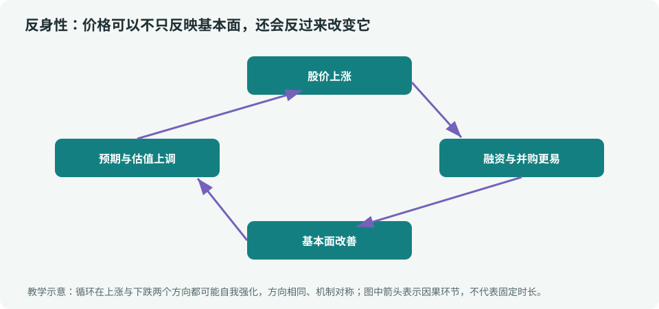

CHAPTER 18 · INVESTMENT STYLES
投资策略流派：价值、成长、动量与反身性
策略不是口号，而是一组关于“钱从哪里来、何时兑现、什么会证明它错”的可检验假设。先看清假设，再决定自己适合哪一类。
为什么两种相反的策略都能赚钱
价值投资者“买入被低估的资产、等待价格回归”，动量交易者“买入已经在上涨的资产、顺势而为”。两者的选股方向看起来正好相反，却都能在市场里长期存在。这不是谁在撒谎，而是因为它们赚的是不同来源的钱：前者赚估值回归与安全边际的钱，后者赚信息扩散缓慢与趋势延续的钱。
看清这一点，就能把“流派之争”转成一个可检验的问题：这个策略假设钱从哪里来？它依赖哪类参与者犯什么错？在什么市场制度下这个假设不成立？本章用四个经典流派为例，把口号拆成假设。
本章边界：没有“正确”的流派，只有与你掌握的信息、资金期限和心理承受能力匹配的策略。文中历史收益率均为原始文献或公开资料中的记录，并标注来源。
价值投资：安全边际与格雷厄姆数
本杰明·格雷厄姆的核心思想是买入价格显著低于内在价值估计的证券，并把差额称为安全边际（Margin of Safety）。安全边际的意义不是让估值更精确，而是承认估值一定会出错。
构造算例：EPS=3 元、BVPS=20 元时，格雷厄姆数 = √(22.5×3×20) = √1350 ≈ 36.74 元。若要求买入价不高于其 2/3，则上界约为 36.74×2/3 ≈ 24.49 元。这两步都只是公式代入。

要注意：格雷厄姆数是筛选规则，不是内在价值。它假设收益与净资产能代表价值，对重资产、亏损或轻资产公司的含义完全不同。
从格雷厄姆到巴菲特：护城河的加入
巴菲特早期遵循格雷厄姆的“烟蒂股”思路，后来在查理·芒格的影响下转向以合理价格买入优质公司，而不是以极低价格买入普通公司。衡量“优质”的核心概念是护城河（Moat）：能长期保护超额利润的结构性优势，例如品牌、网络效应、转换成本与成本优势。
这一转向改变了策略的数学结构：格雷厄姆式策略靠资产清算价值兜底，失败时损失相对有限；优质公司策略靠未来现金流贴现，一旦护城河被破坏，盈利下降与估值倍数压缩可能同时发生，常被称作“戴维斯双杀”。两种策略对投资者的能力要求也不同：前者更依赖报表与筛选纪律，后者更依赖对竞争优势持续性的判断。
成长投资：费雪与林奇的分类
成长投资与价值投资同源——都是寻找价格低于价值的公司——区别在于价值来源：价值投资找“当前资产被低估”，成长投资找“未来现金流被低估”。菲利普·费雪强调企业是否具备可持续增长潜力、管理层质量与研发投入；彼得·林奇则把股票分成六类，每类对应不同的预期与管理方式。
| 林奇分类 | 典型特征 | 主要风险 |
|---|---|---|
| 缓慢增长型 | 大型成熟公司，回报以分红为主 | 增长停滞，估值长期不提升 |
| 稳健增长型 | 每年稳定增长约 10%–12% 的公司 | 增长预期下修时估值回落 |
| 快速增长型 | 小而快的公司 | 为过高增长预期支付过高价 |
| 周期型 | 汽车、钢铁、化工等 | 把周期顶部当成长期趋势 |
| 困境反转型 | 经营困难或濒临破产 | 反转失败、最终退市 |
| 资产隐蔽型 | 拥有未被市场认识的资产 | 价值实现路径不确定 |
林奇管理富达麦哲伦基金期间的年化收益接近 29%，这是公开记录的基金业绩，但属于单一管理人、单一历史时期的结果，不能直接外推到其他时期或产品。
动量与反转：同一策略在不同市场
1993 年，Jegadeesh 与 Titman 报告了一个影响深远的规律：买入过去数月涨幅居前的股票、卖出涨幅靠后的股票，持有数月，在美国市场历史上可获得正的月度超额收益。这被称为动量策略。其可能的解释包括信息扩散缓慢与投资者反应不足。
但同一策略在不同市场的结果并不相同。多项针对中国 A 股的研究报告了较强的中短期反转效应与较弱的动量效应，可能的原因包括散户占比较高、追涨杀跌导致过度反应，以及政策与事件冲击打断趋势。需要强调：这类结论对样本期、股票池、交易成本与指标定义高度敏感，不应被当作固定规律。
动量策略还有一个必须写进假设的风险：动量崩溃（Momentum Crash）。在趋势反转时，前期上涨最多的组合可能下跌最猛，使策略在短期内回吐大量收益。因此动量策略通常需要配套的止损或波动率调整，而不是无脑追随。
反身性：价格如何反过来改变基本面
传统框架假设价格“被动反映”基本面。乔治·索罗斯的反身性理论（Theory of Reflexivity）提出：价格本身可以反过来改变基本面。股价上涨使公司更容易融资、并购或招聘，基本面因此改善，预期进一步上调，股价再次上涨，形成自我强化的循环。

反身性不是一个可直接检验的公式，而是一种观察框架，因此它容易在事后被用来“解释一切”。把它写成可检验假设的做法是：明确循环的哪个环节需要外部资金或融资条件支撑，并找到该环节可能断裂的可观察信号（如融资条件收紧、边际买家消失）。
把策略写成可检验的假设
与其问“我属于哪个流派”，不如把每个候选策略写成一串可验证的陈述。下表把四个流派的核心假设与主要失效条件并列，方便逐项对照自己的信息与资金条件。
| 流派 | 钱从哪里来 | 主要失效条件 |
|---|---|---|
| 价值 | 价格向内在价值回归 | 价值陷阱：低估长期无法修复 |
| 成长 | 企业未来现金流超过当前预期 | 增长被盈证，盈利与倍数同时下滑 |
| 动量 | 信息扩散缓慢、趋势延续 | 趋势反转时的动量崩溃 |
| 反身性 | 价格反向改变基本面 | 循环拐点误判，时机错一次损失很大 |
选择时至少回答三个问题：我的资金能锁定多久？我能拿到什么别人不容易拿到的信息？我在浮亏时能否按规则行动？ 三者的答案常常指向不同类型，而不是同一个“最好的”策略。
自我检验
练习
- 用“钱从哪里来”这句话，分别说清楚价值投资与动量策略各赚的是什么钱。
- 给定 EPS=2 元、BVPS=15 元，算出格雷厄姆数，并说明这个数字是筛选规则还是内在价值。
- 为一个你感兴趣的标的写出“策略假设 + 一个可观察的失效信号”，例如“若连续两个季度经营现金流为负，则我的成长假设失效”。
完成后应能独立回答：为什么两种相反的策略都能赚钱？护城河给策略带来了什么新风险？动量策略在 A 股可能为什么效果不同？反身性循环在下跌方向如何表现？
资料来源与适用范围
本节用于核对各流派的原始表述与实证结论；历史收益率与 A 股效应的描述已在上文标注适用边界，不自造数据。
- Jegadeesh & Titman (1993)｜Returns to Buying Winners and Selling Losers, Journal of Finance
- Graham, B.《The Intelligent Investor》与 Graham & Dodd《Security Analysis》——安全边际与格雷厄姆数的原始表述。
- Fisher, P.《Common Stocks and Uncommon Profits》——成长股选股框架。
- Soros, G.《The Alchemy of Finance》——反身性理论的原始描述。